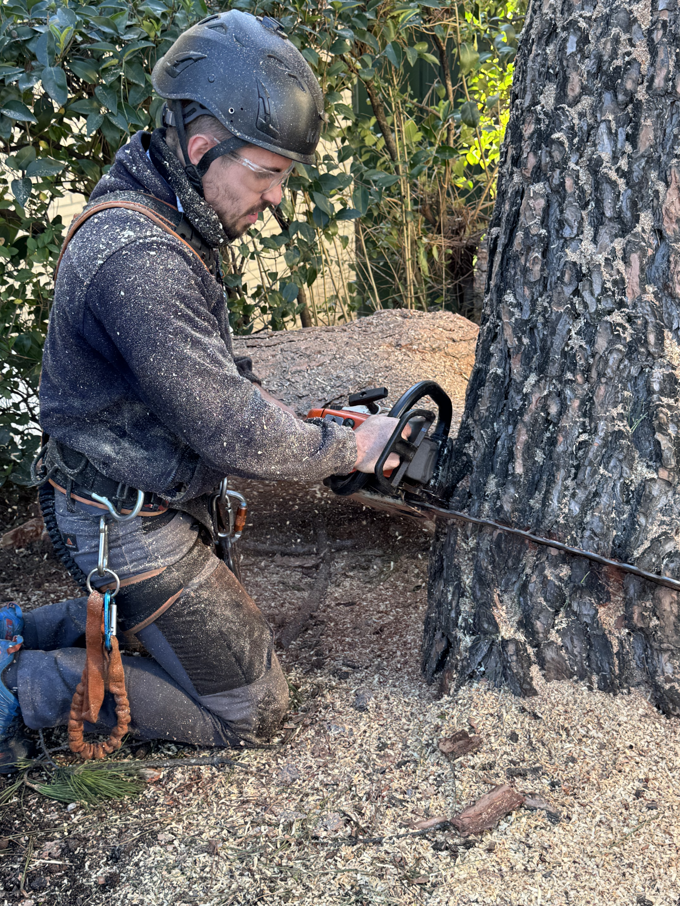

Hola, soy Javier Vaquerizas.
Fundador de JAVAMA Jardinería. Dedicado al cuidado y diseño de espacios verdes que armonicen con la naturaleza.

Hola, soy Javier Vaquerizas, fundador de JAVAMA Jardinería. Con más de 20 años de experiencia en el sector, he dedicado mi vida al cuidado y diseño de espacios verdes que armonicen con la naturaleza.
Mi pasión por la jardinería comenzó en mi infancia, creciendo en un entorno rural donde aprendí a valorar y respetar la naturaleza. Esta conexión temprana se convirtió en mi vocación y finalmente en mi profesión.
En JAVAMA, combinamos técnicas tradicionales con innovaciones modernas para crear jardines que no solo son hermosos, sino también sostenibles y respetuosos con el medio ambiente.
Oficio y pasión.
Diseño de jardines
Poda de árboles
Mantenimiento de zonas verdes
¿Hablamos de tu jardín?
Cuéntanos qué tienes en mente y te preparamos una propuesta a tu medida.